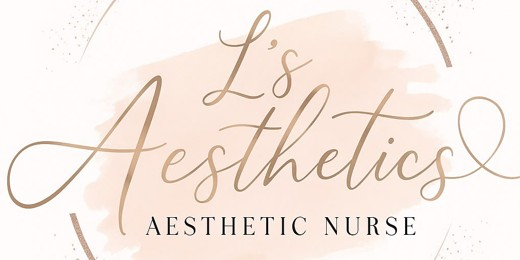

Hello Lena, it is Vanessa. I made these from one photo and your logo, so you can see how your page could look. Eight posts across two weeks, one each for Monday, Wednesday, Friday and Sunday, with the captions and hashtags already written.